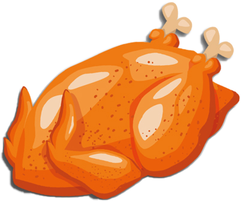

| صبحانه | ناهار  | شام | |
|---|---|---|---|
| شنبه | پنیر | غذای برنجی محل کار | سوپ رشته |
| نان (۹۰گرم) - پنیر فتا (25گرم) | برنج (15قاشق غذاخوری)- سالاد فصل (200گرم)- خورشت، گوشت یا کباب (150گرم) | نان (80گرم)- سوپ رشته (1لیوان(هر لیوان 240گرم)) | |
| یکشنبه | حلواشکری | غذای برنجی محل کار | شیر و بیسکوییت |
| نان (90گرم) - حلواشکری (30گرم) | برنج (15قاشق غذاخوری)- سالاد فصل (200گرم)- خورشت، گوشت یا کباب (150گرم) | بیسکوییت سبوس دار (40گرم)-شیر 2% چربی، پاستوریزه (1لیوان(هر لیوان 240گرم)) |